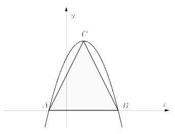

Jesteś tutaj: Matura
podstawowa - kurs - część 30 - zadania
Matura podstawowa - kurs - część 30 - zadania
Cały kurs na: ./matematyka-matura-podstawowa-kurs.html.
Wykres funkcji \(f(x)=x^2-2x-8,\) gdzie \(x \in
\mathbb{R}\), przecina oś \(OX\) w punktach \(A\) i \(B\).
- Wyznacz współrzędne punktów \(A\) i \(B\).
- Oblicz pole trójkąta \(AWB\), jeśli \(W\) jest wierzchołkiem paraboli będącej wykresem funkcji \(f\).
\(A=(-2,0)\), \(B=(4,0)\), \(P_{\Delta AWB}=27\)
Funkcja kwadratowa \(f\) określona jest wzorem \(f(x) = ax^2 + bx + c\). Zbiorem
rozwiązań nierówności \(f(x) \gt 0\) jest przedział \((0,12)\). Największa wartość funkcji
\(f\) jest równa \(9\). Oblicz współczynniki \(a\), \(b\) i \(c\) funkcji \(f\).
\(a=-\frac{1}{4}\), \(b=3\), \(c=0\)
Rozważmy prostokąt o polu mniejszym od \(24\), w którym jeden bok jest od drugiego
dłuższy o \(5\). Oblicz długość dłuższego boku prostokąta, jeśli jest ona liczbą całkowitą parzystą.
\(6\)
Do napełniania basenu służą dwie pompy. Pierwsza z nich ma wydajność o \(20\%\)
większą niż druga. Napełnienie pustego basenu tylko drugą pompą trwa o \(1\) godzinę i \(40\) minut
dłużej niż przy użyciu tylko pierwszej pompy. Oblicz, jaką część pustego basenu napełnią w ciągu
jednej godziny obie pompy, pracując jednocześnie.
\(\frac{22}{100}\)
Na rysunku przedstawiony jest fragment wykresu funkcji kwadratowej \(f\).  Osią symetrii paraboli jest
prosta o równaniu \(x=-3\). Rozwiązaniem nierówności \(f(x)\le 0\) jest zbiór
Osią symetrii paraboli jest
prosta o równaniu \(x=-3\). Rozwiązaniem nierówności \(f(x)\le 0\) jest zbiór
Osią symetrii paraboli jest
prosta o równaniu \(x=-3\). Rozwiązaniem nierówności \(f(x)\le 0\) jest zbiór A.\( \langle 0,-3\rangle \)
B.\( \langle -3,3\rangle \)
C.\( \langle -6,3\rangle \)
D.\( \langle -9,3\rangle \)
D
Wyznacz wzór funkcji kwadratowej \(f\) w postaci ogólnej, wiedząc, że zbiorem
wartości tej funkcji jest przedział \((-\infty ,-1\rangle \), a wartość \(-5\) osiąga ona
dla dwóch argumentów: \(2\) i \(10\).
\(f(x)=-\frac{1}{4}x^2+3x-10\)
Na rysunku są przedstawione fragmenty wykresów funkcji kwadratowych \(f\) i \(g\).
Funkcja \(f\) jest określona wzorem \(f(x)=-x^2+6x-5\), a mniejsze z jej miejsc zerowych jest
jednocześnie miejscem zerowym funkcji \(g\). Wierzchołek \(W\) paraboli, która jest wykresem funkcji
\(f\), leży na wykresie funkcji \(g\), a wierzchołek \(Z\) paraboli będącej wykresem funkcji \(g\)
leży na osi \(Oy\) układu współrzędnych. Wyznacz wzór funkcji \(g\). 
\(g(x)=\frac{1}{2}(x-1)(x+1)\)
Wykres funkcji kwadratowej \(f\) przecina oś \(Ox\) w punktach \(x=1\) oraz \(x=3\)
i przechodzi przez punkt \((0,-3)\). Wykres ten przesunięto i otrzymano wykres funkcji kwadratowej
\(g(x)=f(x-p)\). Wierzchołek funkcji \(g\) leży na osi \(Oy\). Wyznacz wzór funkcji \(g\).
\(g(x)=-x^2+1\)
Parabola, która jest wykresem funkcji kwadratowej \(f(x)=ax^2+bx+c\), przechodzi
przez punkt \((-2,10)\) oraz \(f(-1)=f(3)=0\). Oblicz odległość wierzchołka paraboli od początku
układu współrzędnych.
\(\sqrt{65}\)
Funkcja kwadratowa \(f\), której miejscami zerowymi są liczby \(-2\) i \(4\), dla
argumentu \(1\) przyjmuje wartość \(3\). Uzasadnij, że wykres funkcji \(f\) ma dwa punkty wspólne z
prostą \(y=2\).
Wierzchołki trójkąta \(ABC\) leżą na paraboli, która jest wykresem pewnej funkcji
kwadratowej \(f\) (zobacz rysunek).  Pole trójkąta jest równe \(8\), punkt \(C=(1,4)\) jest wierzchołkiem paraboli, a
punkty \(A\) i \(B\) leżą na osi \(Ox\). Wyznacz wzór funkcji \(f\).
\(f(x)=-(x-1)^2+4\)
W układzie współrzędnych na płaszczyźnie rysujemy łamane. Kolejne wierzchołki
każdej z tych łamanych to punkty: \[A_1=(0,0),\quad A_2=(1,0),\quad A_3=(1,-1),\quad
A_4=(-1,-1),\quad A_5=(-1,1),\quad A_6=(2,1)\] i tak dalej. Na rysunku jest przedstawiona łamana
składająca się z dziesięciu odcinków, której ostatnim wierzchołkiem jest punkt \(A_{11}=(3,-3)\).
Funkcja \(f\) przyporządkowuje każdej liczbie naturalnej \(n\ge 1\) długość łamanej złożonej z
\(2n\) odcinków, czyli takiej, której początkowym wierzchołkiem jest punkt \(A_1\), a końcowym
\(A_{2n+1}\). Wyznacz wzór funkcji \(f\) oraz oblicz jej wartość dla \(n=33\). 
\(f(n)=n(n+1)\)
\(f(33)=1122\)
\(f(33)=1122\)